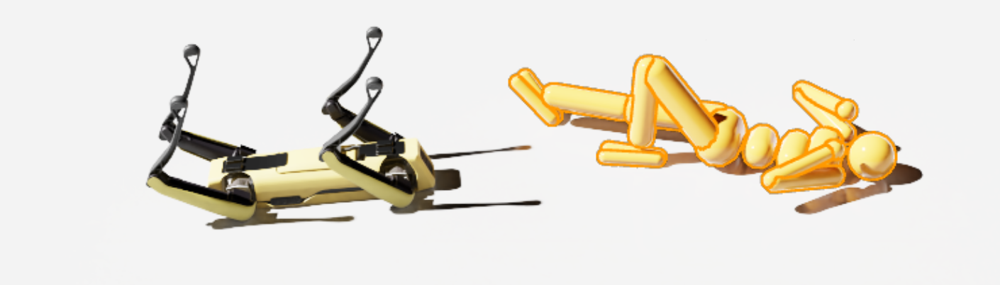
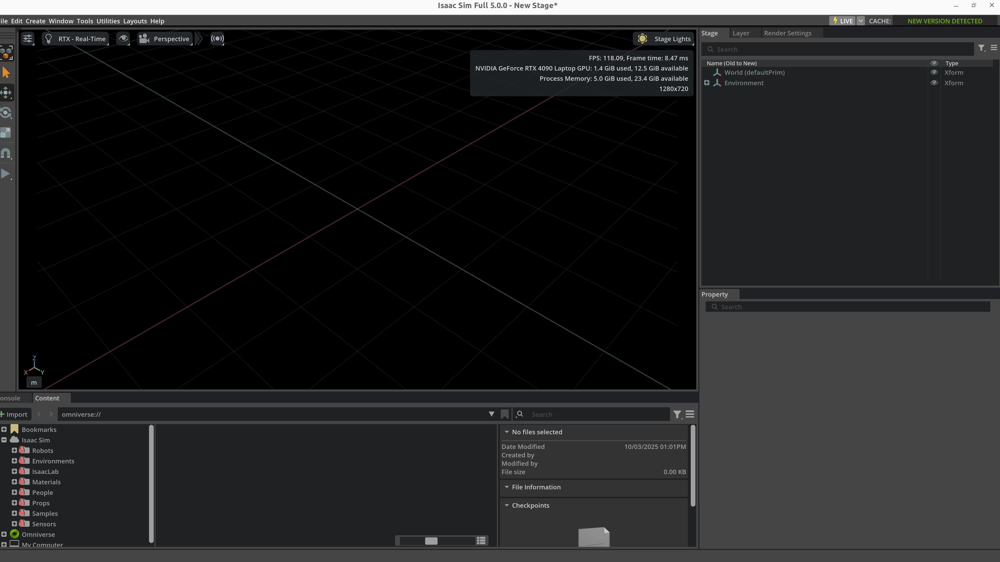

Simulation Assets
Simulation assets are the reusable building blocks of robot simulation. Robot bodies, end-effectors, tables, cups, drawers, terrain, lights, cameras, LiDAR units, materials, collision proxies, and annotation metadata all belong to the asset layer. Many teams think simulation means “pick a simulator and import the robot.” In practice, training quality, simulation stability, rendering realism, and Sim2Real transfer often fail first at the asset layer, not at the algorithm layer.
This note focuses on asset-layer questions: what objects exist in simulation, how they are modeled, produced, imported, managed, validated, and finally turned into trainable, debuggable, transferable simulation worlds. For platform selection see Simulation Platforms; for world assembly and physics rules see Simulation World Building & Physics Rules; for syntax-level format primers see Development Toolchain.
1. Asset Layer Overview
1.1 What is the asset layer
In embodied AI engineering, the stack can be decomposed into four rough layers:
Figure 1 — The simulation stack is an inverted pyramid: the algorithm layer at the top bears the least load, while the asset layer is the widest, thickest load-bearing base; most upper-layer fault root causes sink down to the asset layer.
- The platform layer decides which physics engine, renderer, API, and performance envelope you get.
- The asset layer decides whether robots, objects, scenes, and sensors are credible, stable, and reusable.
- The world layer decides how those assets are placed, reset, sampled, and turned into tasks.
- The algorithm layer trains or evaluates policies on top of that foundation.
The asset layer is not “just import a mesh.” It is where geometry, appearance, physics, interaction affordances, calibration, naming, and versioning are unified.
1.2 Boundaries with related notes
| Topic | Focus of this note | Related note |
|---|---|---|
| Simulator selection | Not covered in depth here | Simulation Platforms, Simulation Tool Comparison |
| World hierarchy and physics rules | Only discussed insofar as assets expose parameters | Simulation World Building & Physics Rules |
| URDF/MJCF/SDF/USD syntax | Not a syntax tutorial | Development Toolchain |
| Dynamics and control theory | Referenced only when asset parameters depend on them | Control Theory, Dynamics |
| Sim2Real | Discussed from the asset perspective | Sim2Real |
1.3 Why asset quality is a first-order problem
Many training failures look like “the reward is wrong,” “the policy cannot learn,” or “the sim-to-real gap is too large.” The real cause is often at the asset layer:
- Incorrect link inertia makes the controller unstable from day one.
- Overly detailed collision meshes make contact solving expensive and noisy.
- Sensor mounting frames are wrong, so the visual policy never sees the target correctly.
- Materials and lighting are too idealized, so vision fails immediately on real hardware.
- Object pivots are wrong, so drawers and handles behave unnaturally.
- Naming and metadata are messy, so synthetic data becomes impossible to trace and audit.
One useful mental model is:
In many real systems, Assets is the first term that needs engineering discipline.
1.4 Asset lifecycle
Figure 2 — The asset lifecycle is a closed loop: a published asset reused by the world layer exposes new requirements, flowing back to redefine requirements; every stage output carries semantic + version metadata.
1.5 Goals of asset engineering
A “good asset” is not merely visually attractive. It should be:
- Geometrically correct: scale, axes, pivots, normals, and topology are sound.
- Visually credible: materials and textures support meaningful appearance variation.
- Physically stable: mass, inertia, collision proxies, and joint limits support robust simulation.
- Interaction-ready: contact surfaces, affordances, and action semantics are explicit.
- Reusable: naming, folders, metadata, and versioning are clean.
- Transferable: the asset can be consumed by multiple simulators or data pipelines.
2. Asset Taxonomy
2.1 Main asset classes
Figure 3 — Asset taxonomy is a map of unequal areas: robot / interactive-object assets carry the heaviest governance burden (largest area); metadata is the thin but critical band cutting across all classes.
2.2 Assets from the task perspective
| Task type | Core assets | Frequent extra assets | Primary asset difficulty |
|---|---|---|---|
| Tabletop grasping | Arm, gripper, table, cup, box | Overhead camera, wrist camera, background boards | Object scale and graspability |
| Articulated object manipulation | Cabinet doors, drawers, faucets, knobs | Contact sensors, limits | Axis definition and damping |
| Insertion / assembly | Pegs, sockets, fixtures | High-fidelity collision proxies, force sensing | Tolerances and contact stability |
| Mobile navigation | Maps, obstacles, doors, corridors | LiDAR, IMU, semantics | Large-scene partitioning and reset |
| Quadruped locomotion | Robot, terrain, stairs, slopes | Height map, contact points | Terrain material and friction |
| Humanoid carrying | Full-body robot, box, workcell | Multi-camera rigs, contact/torque sensing | Self-collision and heavy payloads |
2.3 Assets from the ownership perspective
| Role | Asset responsibility | Typical outputs |
|---|---|---|
| Mechanical / structural engineer | CAD models, joint structure, assembly logic | STEP, SolidWorks, OnShape |
| 3D artist / digital twin engineer | Visual meshes, materials, lighting, environment styling | FBX, USD, PBR texture packs |
| Simulation engineer | Collision shapes, inertia, joints, drives, sensors | URDF, MJCF, USD Physics, SDF |
| Algorithm engineer | Randomization ranges, data interfaces, annotation schemas | Configs, dataset schemas |
| Infrastructure engineer | Asset registry, versioning, validation, CI | Manifests, validation scripts, registries |
2.4 Assets are not files; they are “files + semantics + rules”
The same mug may exist as:
mug_visual.obj: render meshmug_collision.obj: collision proxymug.usdormug.xml: scene/physics definitionmetadata.json: category, grasp regions, material label, semantic IDs
So a practical asset can be summarized as:
3. Geometry and Mesh Fundamentals
3.1 Primitive, mesh, and instancing
| Representation | Advantages | Disadvantages | Best use |
|---|---|---|---|
Primitive (box, sphere, capsule) |
Cheap, stable, easy inertia | Coarse shape | Collision, prototyping |
| Triangle mesh | Highly expressive | Heavy, topological issues | Visual assets |
| Convex hull | Stable collision, fast | Limited fidelity | Collision proxies |
| Convex decomposition | Good physics / fidelity balance | Requires preprocessing | Interactive object collision |
| Instancing | Saves memory and load time | Less flexible per instance | Large warehouse or furniture scenes |
3.2 Axes, units, and scale
| Dimension | Common convention | Typical failure mode |
|---|---|---|
| Length | meters | CAD exported in millimeters, causing 1000x mismatch |
| Up axis | +Z or +Y |
Mismatch across DCC tools and simulator pipelines |
| Angle | radians | Joint limits accidentally specified in degrees |
| Scale | baked before export | Runtime scale hacks break inertia and collision consistency |
Recommended export discipline:
- Use meters end to end.
- Keep root scale at
1,1,1. - Make local frames meaningful for joints and assembly.
- Keep joint axis directions consistent across CAD, description files, and simulator imports.
3.3 Local origin and pivot
The local pivot is not just an art-side concern. It directly affects:
- grasp pose definitions
- hinge centers
- placement and reset
- semantic action points
A drawer mesh with its pivot at the geometric center may render fine, but it is awkward if the world layer expects a slider reference at the rail origin.
3.4 Mesh topology and normals
Common bad-mesh symptoms:
- inverted normals
- non-manifold edges
- overlapping faces
- excessively dense triangulation
- extremely skinny triangles that confuse collision approximation
3.5 LOD (Level of Detail)
| LOD level | Polygon budget | Intended use |
|---|---|---|
| LOD0 | Highest | Close-up rendering, demos, screenshots |
| LOD1 | Medium | Standard training and interaction |
| LOD2 | Low | Far background |
| Collision proxy | Very low | Physics and contact |
3.6 UV and texture readiness
At minimum, a usable visual asset should answer:
- Does the mesh have valid UVs?
- Can textures tile without obvious artifacts?
- Are normal and roughness maps consistent?
- Is the texture resolution appropriate for the rendered sensor resolution?
Figure 4 — UV unwrap cuts and flattens the 3D mesh surface onto the [0,1]² texture space; the 3D vertices of one triangle map one-to-one to 2D UV coords, and seam/stretch quality decides whether materials align.
3.7 Minimum geometry checklist
| Item | Pass criterion |
|---|---|
| Units | meters |
| Axes | documented and consistent |
| Scale | root scale equals 1 |
| Normals | outward-facing |
| Topology | no severe non-manifold defects |
| LOD | at least training-grade and display-grade |
| Collision proxy | available |
4. Visual Asset Production
4.1 “More photorealistic” is not always better
Visual assets balance three goals:
- Realism
- Controllability
- Performance
For training, “controlled realism” is usually more valuable than cinematic visual quality.
4.2 PBR material stack
| Map / parameter | Purpose | Frequent mistake |
|---|---|---|
| Base Color / Albedo | Surface color | Baking shadows into color maps |
| Normal | Fine-scale detail | Wrong normal-space convention |
| Roughness | Micro-surface scattering | Metallic vs plastic not distinguishable |
| Metallic | Metal response | Misusing it on painted surfaces |
| AO | Ambient occlusion | Double-darkening with dynamic shadows |
| Emissive | Self-lit surfaces | Creating unrealistic bright hotspots |
4.3 Color space
Two spaces are commonly confused:
- sRGB for display color
- Linear for physical shading computation
Typical convention:
- base color in sRGB
- roughness / metallic / normal in linear space
4.4 Material family library
| Material family | Typical parameter regime | Common objects |
|---|---|---|
| Matte plastic | low metallic, medium/high roughness | cups, bins, housings |
| Polished metal | high metallic, low roughness | stainless containers, tools |
| Painted metal | medium roughness | cabinets, machine frames |
| Wood | non-metallic, weak normal pattern | tables, shelves |
| Fabric | high roughness, fine normal texture | bags, chairs, upholstery |
| Transparent | refractive / reflective | glass cups, shields |
4.5 Randomization-friendly material design
For Sim2Real, materials should support:
- color replacement
- texture substitution
- roughness perturbation
- lighting variation
- camera exposure variation
Avoid:
- baking all shadows and stains into the base color
- relying on platform-specific shaders
- using ultra-high-resolution textures across training scenes by default
4.6 Lights as reusable visual assets
| Light type | Best use | Typical pitfall |
|---|---|---|
| Directional | sunlight, dominant directional light | overly hard or fixed shadows |
| Point | local fill lights | expensive in large numbers |
| Spot | overhead fixtures, industrial lamps | poor cone-angle tuning causes blown highlights |
| Dome / HDRI | environment illumination | overly idealized backgrounds |
| Rect light | soft indoor area lighting | inconsistent platform support |
4.7 Visual asset checklist
| Item | Goal |
|---|---|
| Material naming | searchable and consistent |
| Texture paths | portable and relative |
| Color spaces | explicitly correct |
| Reflectance | plausible by asset class |
| Light packs | reusable and randomizable |
| Texture size | matched to sensor/training needs |
| Domain randomization hooks | easy to override |
5. Physical Asset Production
5.1 Visual mesh and collision mesh must be separated
| Aspect | Visual mesh | Collision mesh |
|---|---|---|
| Goal | looks right | simulates right |
| Polygon budget | high | low |
| Detail | preserve appearance | preserve contact-relevant shape |
| Rendering | required | not required |
| Physics | usually not ideal | required |
Using the visual mesh directly for collision commonly produces:
- slow contact detection
- jittering contacts
- unstable stacking
- false narrow gaps in insertion tasks
5.2 Convex decomposition
Figure 5 — Convex decomposition: using a concave shape directly as collision lets its convex hull fill the hole and cause contact errors; splitting into a union of convex hulls keeps the hole while letting GJK solve each piece fast.
Typical beneficiaries:
- mugs with handles
- cabinets
- pliers and cutters
- door handles
- objects with holes or narrow cavities
5.3 Mass, center of mass, and inertia
At minimum, a rigid-body asset should define:
- mass \(m\)
- center of mass \(\mathbf{c}\)
- inertia tensor \(\mathbf{I}\)
For a point-mass approximation:
If inertia is too small, objects feel “weightless” and unstable. If inertia is too large, motions become unrealistically sluggish.
5.4 Common inertia failures
| Failure | Symptom |
|---|---|
| Non-positive-definite inertia | simulator error or unstable behavior |
| COM not matching geometry | unnatural falling or grasping behavior |
| Reusing one inertia template everywhere | poor whole-body realism |
| Scaling geometry without recomputing inertia | mass-volume mismatch |
5.5 Friction, restitution, and contact properties
| Parameter | Meaning | Effect |
|---|---|---|
| Static friction | resistance before sliding | whether motion starts easily |
| Dynamic friction | resistance during sliding | how sliding evolves |
| Restitution | bounce coefficient | how collision rebounds |
| Contact offset | pre-contact tolerance | early contact generation |
| Rest offset | stable resting separation | contact stability |
These values should never be interpreted in isolation. They interact with solver settings, step size, and geometry scale; the full system view belongs in Simulation World Building & Physics Rules.
5.6 Collision layers and masks
Collision layers are essential in large systems for:
- excluding unnecessary self-collision pairs
- removing decorative parts from physics
- limiting fingertip interactions to specific categories
- separating trigger volumes from solid geometry
5.7 Contact proxies and affordance proxies
Two extra abstractions are often useful:
- Contact proxy for the solver
- Affordance proxy for higher-level action logic
A mug might therefore carry:
- outer collision proxy
- inner cavity proxy
- graspable region proxy
- liquid-volume proxy
5.8 Physical asset validation
A minimum smoke-test suite often includes:
- free-fall sanity check
- tilted-plane rolling/sliding sanity
- grasp-and-hold stability
- repeated reset consistency
- outlier detection across parallel environments
6. Robot Assets
6.1 Robot asset composition
Figure 6 — A robot asset is a kinematic chain where each link node itself carries visual/collision/inertial/motor/sensor assets; the three geometries must stay separate, and metadata cuts across the whole tree.
6.2 From “valid file” to “usable asset”
Development Toolchain introduces <link>, <joint>, <inertial>, and <sensor> from a format perspective. The asset question is different:
- is the structure reusable?
- do frames make sense?
- do collision proxies match expected behavior?
- can the robot survive gravity, contact, reset, and randomization?
A robot file that renders correctly in RViz may still be a poor simulation asset.

Figure: once a robot asset is placed into a simulator and exposed to gravity, ground contact, and joint drives, many issues that were invisible in the description file become obvious immediately. This is a good example of “loadable,” but not yet “usable.”
6.3 Minimal robot asset unit
| Unit | Must include |
|---|---|
| Base | root frame, mass, collision |
| Link | visual, collision, inertial |
| Joint | parent/child, axis, limits, dynamics |
| End-effector | tool frame, contact surfaces, grasp geometry |
| Sensor mount | extrinsics, mounting offset, stable name |
| Actuator config | control mode, gain, saturation |
6.4 Joint axes, limits, and conventions
Frequent robot-asset failures:
- axis direction reversed
- limits inconsistent with the real mechanism
- mimic fingers not synchronized
- zero configuration inconsistent with the physical robot
6.5 Control interfaces as part of the robot asset
| Interface | Meaning | Good fit |
|---|---|---|
| Position | target joint positions | industrial arms, low-speed tasks |
| Velocity | target velocities | mobile bases, slides |
| Torque / Force | direct actuation | research and advanced control |
| Effort + PD | simulator-side PD with torque limit | RL and locomotion |
| Operational space | end-effector-space commands | teleoperation and manipulation |
6.6 Naming discipline
Recommended stable names include:
base_linkshoulder_linkwrist_roll_jointleft_finger_padcamera_front_optical_frametool0
Poor naming causes:
- fragile controllers
- messy datasets
- hard-to-maintain conversion scripts
- logs that cannot be compared across runs
6.7 Robot asset case study: tabletop manipulator
| Layer | Example content | Role |
|---|---|---|
| Structure | 6 revolute joints + gripper | kinematic skeleton |
| Visual | shell meshes, covers, branding | rendering |
| Physics | simplified capsules/boxes, inertia | stable simulation |
| Tooling | TCP, finger pads, grasp surfaces | manipulation |
| Sensors | wrist camera, encoders, torque estimate | observation |
| Control | joint-space PD or operational-space action | training and deployment |
6.8 Robot asset debug checklist
| Item | Validation method |
|---|---|
| Zero pose | visual inspection after reset |
| Link inertia | free-motion and gravity tests |
| Self-collision | full joint scan |
| TCP frame | alignment check |
| Sensor extrinsics | validate through calibration workflow |
7. Interactive Object Assets
7.1 Rigid, articulated, soft
| Type | Examples | Primary challenge |
|---|---|---|
| Rigid | cups, blocks, toolboxes | mass and grasp behavior |
| Articulated | doors, drawers, faucets, scissors | axes, damping, limits |
| Soft | cloth, ropes, bags | cost and cross-platform variance |
| Hybrid | spring covers, clamps, cable sockets | multiple constraints |
7.2 Seven questions every interactive object should answer
- What object category is this?
- Is it graspable?
- Is it openable / rotatable / insertable?
- Where are the critical action regions?
- Which parts participate in collision?
- Which parameters are randomizable?
- Does it expose semantic state?
7.3 Common manipulable object templates
| Object template | Key asset fields |
|---|---|
| Door | hinge axis, angle range, handle pose, damping |
| Drawer | slider axis, travel range, handle affordance |
| Knob | rotation axis, detents, friction |
| Plug | tolerance, insertion axis, contact surfaces |
| Cup / container | inner and outer walls, volume proxy, grasp regions |
| Tool | handle region, functional tip, restricted zones |
7.4 Lessons from PartNet-Mobility, ManiSkill, and robosuite
| Ecosystem | Contribution | Asset-engineering lesson |
|---|---|---|
| PartNet-Mobility | large library of articulated household objects | joint-aware object assets matter |
| ManiSkill | GPU-friendly manipulation worlds | assets must support parallel training |
| robosuite | standardized manipulation templates | assets should serve task abstractions |
7.5 Semantic state machines for objects
Meshes alone do not express task state. Many objects need explicit semantics:
Figure 7 — An interactive object's task state is an FSM partitioned by joint-position q∈[0,1] thresholds: Closed/Open are stable states (double circles), Opening/Closing are transient; q is invisible to the visual mesh and must be modeled explicitly.
7.6 Object case study: drawer asset
Minimum components:
- cabinet body mesh
- drawer body mesh
- prismatic joint
- travel limits
- handle affordance region
- collision proxies
- semantic “open ratio”
| Component | Role |
|---|---|
| Cabinet body | static support geometry |
| Drawer body | moving part |
| Slider joint | motion definition |
| Handle proxy | grasp sampling |
| Contact proxy | stable contact |
| Semantic tag | is_open, open_ratio |
7.7 Long-tail objects
Hard object categories include:
- tiny batteries or screws
- soft packaging
- transparent cups
- reflective metal tools
7.8 Object asset checklist
| Item | Pass condition |
|---|---|
| Motion axis | physically meaningful |
| Limits | no penetration, no unrealistic travel |
| Affordances | reachable and semantically explicit |
| State labels | usable by reward and evaluation |
| Collision proxies | neither too coarse nor too dense |
| Randomization hooks | size, material, friction configurable |
8. Sensor Assets
8.1 Sensors are first-class assets
They are not just simulator plug-ins. In practice they are first-class assets because they carry:
- mounting frames
- update rates
- latency
- noise models
- calibration interfaces
- dataset schema implications
8.2 Key sensor fields
| Field | Meaning |
|---|---|
frame_id |
frame name |
mount_pose |
installation pose |
rate_hz |
update frequency |
latency_ms |
output latency |
noise_model |
noise behavior |
resolution |
image / point cloud size |
fov |
field of view |
sync_group |
synchronization group |
8.3 Vision sensors
| Sensor | Key parameters | Common use |
|---|---|---|
| RGB camera | resolution, FOV, exposure, white balance | vision policy, VLA, detection |
| Depth camera | range, noise, holes | manipulation, 3D perception |
| Stereo camera | baseline, calibration | geometric depth |
| Event camera | threshold, event polarity | high-speed scenes |
8.4 Geometric sensors
| Sensor | Key parameters | Common use |
|---|---|---|
| LiDAR | beam count, spin rate, range | navigation, mapping |
| Radar | echo model, velocity resolution | outdoor mobility |
| Ultrasonic | cone angle, range | short-range obstacle awareness |
8.5 Proprioception and contact sensors
| Sensor | Key parameters | Role |
|---|---|---|
| Joint encoder | resolution, noise, bias | joint state |
| IMU | bias drift, white noise, rate | pose estimation |
| Force/torque | saturation, filtering | assembly and contact control |
| Contact sensor | threshold, support surface | grasping, foot contact |
| Tactile array | taxel layout, sensitivity | dexterous manipulation |
8.6 Mounting hierarchy
Figure 8 — Sensor mounting is a TF tree, each edge a rigid transform (t,R), each node carrying a coordinate triad; the most common bug is treating the camera optical convention (z fwd) as the body convention (x fwd).
8.7 Calibration hooks
This note only discusses what the asset should expose:
- camera intrinsics
- camera extrinsics
- depth scale
- IMU bias prior
- LiDAR beam specification
- force/torque zero point
8.8 Sensor asset config example
camera_asset = {
"name": "wrist_cam",
"frame_id": "wrist_cam_optical_frame",
"resolution": [640, 480],
"fov_deg": 72.0,
"rate_hz": 30,
"latency_ms": 20,
"noise": {
"read_noise": 0.01,
"white_balance_jitter": 0.05,
},
}
<sensor name="front_depth" type="depth">
<update_rate>30</update_rate>
<camera>
<horizontal_fov>1.05</horizontal_fov>
<image><width>640</width><height>480</height></image>
</camera>
</sensor>
8.9 Sensor checklist
| Item | Goal |
|---|---|
| Frame naming | unique and clear |
| Extrinsics | documented |
| Update rate | consistent with control and logging |
| Latency | explicit and randomizable |
| Noise | plausible default values |
| Data interface | easy to pipe into datasets |
9. Scene and Environment Assets
9.1 Scene assets are more than individual objects
A scene asset emphasizes composition and spatial semantics. A “kitchen counter” is not just a table mesh; it often includes:
- counter geometry
- cabinets
- drawers
- wall backdrop
- ceiling lights
- camera mounting points
9.2 Common scene templates
| Scene template | Core assets |
|---|---|
| Tabletop workbench | table, backdrop, storage bins, target objects, fixed camera rig |
| Home kitchen | countertop, cabinets, drawers, cups, small appliances, lights |
| Warehouse shelf | racks, bins, aisles, pallets, labels |
| Industrial workcell | fixtures, jigs, guards, conveyors, tools |
| Indoor navigation space | rooms, doors, hallways, obstacles, semantic labels |
| Outdoor terrain | road surface, slopes, rocks, grass, sky illumination |
9.3 Lighting template library
| Template | Use |
|---|---|
| uniform overhead lights | baseline training |
| strong side light | shadows and highlights |
| backlight | robustness testing |
| HDR environment | global realism |
9.4 Background and distractor assets
Background content is critical for visual robustness:
- clean table vs cluttered table
- uniform color backdrop vs household clutter
- sterile workcell vs tool-rich workbench
9.5 Scene hierarchy organization
Figure 9 — Scene template = fixed skeleton + samplable slots: the Static Layout stays fixed every reset while Movable/Lighting are resampled from a distribution — same skeleton, different instances.
9.6 Large scenes and partitioning
For warehouses, factories, and building-scale navigation worlds, partition assets into chunks:
room_a.usdcorridor_1.usdworkcell_pick_place.usdwarehouse_shelf_block_3.usd
9.7 Scene asset checklist
| Item | Pass criterion |
|---|---|
| Ground reference | consistent zero level |
| Light templates | reusable and swappable |
| Obstacle layers | independently enabled/disabled |
| Camera locations | named and documented |
| Scene graph | stable hierarchy |
| Reset anchors | object spawn anchors available |
10. Main Asset Description Formats
10.1 Expressive power by format
| Format | Strengths | Weaknesses | Best for |
|---|---|---|---|
| URDF | robot skeletons, ROS ecosystem | weak world expression, weak closed chains | robot bodies |
| MJCF | rich contact, actuators, sensors, constraints | weaker large-scene collaboration | robot physics and manipulation |
| SDF | scenes, lights, sensors, world config | largely centered on Gazebo ecosystem | world and scene description |
| USD | scene graph, references, layering, materials | high complexity, more Omniverse-centric | large asset libraries and digital twins |
| Mesh files | easy exchange | no full world semantics | raw geometry assets |
10.2 URDF from the asset-engineering perspective
URDF is excellent for:
- robot kinematic trees
- link visual/collision/inertial structure
- ROS-facing robot descriptions
It is not ideal as a full world-asset language because it does not naturally own:
- global lighting
- multi-model scene layout
- complete world physics configuration
10.3 MJCF as a physical-asset language
MJCF is attractive because it expresses simulator-relevant physics directly:
geomactuatorsensorequalitysolref,solimp,condim
For MuJoCo-centric projects, MJCF often becomes the natural “usable asset” representation.
10.4 SDF as a world-asset format
SDF is suitable when the world description must include:
- multiple models
- light sources
- sensors
- physics engine settings
- plugins
10.5 USD as an asset-library mindset
The biggest value of USD is not just what one file can contain, but that it supports:
- references
- instancing
- composition
- layering
- large collaborative scene graphs
10.6 Choosing mesh exchange formats
| Format | Notes |
|---|---|
| STL | simple and common, but no material semantics |
| OBJ | straightforward mesh exchange with material references |
| FBX | widely used in DCC workflows, but implementation differences matter |
| glTF | lightweight and good for web/viewers |
| USD Mesh | ideal in OpenUSD / Omniverse pipelines |
10.7 One asset often needs multiple formats
A mature project may keep, for the same asset:
robot.urdfrobot.usdrobot_collision.stlrobot_visual.fbxmetadata.yaml
That is normal, because different consumers need different representations.
11. Asset Production Workflow
11.1 End-to-end flow: CAD to simulator
Figure 10 — CAD→sim is a data-enrichment spine: the asset accrues one facet per stage (visual→collision→physics→kinematics→format); inertia and collision-proxy are the two high-risk stages.

Figure: the final step of an asset pipeline is not merely “the file imports.” You still need to inspect scene hierarchy, property bindings, resource references, and basic visual state inside the simulator. Panels such as Stage, Property, and Content are part of asset acceptance, not a cosmetic convenience.
11.2 Recommended folder structure
assets/
├── robots/
│ └── franka_like_arm/
│ ├── meshes/
│ ├── textures/
│ ├── urdf/
│ ├── usd/
│ └── metadata.yaml
├── objects/
│ └── mug_01/
├── scenes/
│ └── kitchen_counter_v2/
├── sensors/
│ └── rgbd_front_cam/
└── materials/
└── brushed_metal/
11.3 Versioning and traceability
Every important asset should ideally carry:
asset_idversionsourceunitlicensesim_test_statuslast_validated_platforms
11.4 Manifest example
asset_id: mug_01
version: 2.1.0
category: rigid_object
source: internal_scan
unit: meter
formats:
visual_mesh: meshes/mug_visual.obj
collision_mesh: meshes/mug_collision.obj
usd: usd/mug_01.usd
physics:
mass_kg: 0.32
static_friction: 0.55
dynamic_friction: 0.42
semantics:
affordances: [grasp_side, place_upright]
container: true
11.5 What CI validation should check
Asset CI can check:
- missing files
- naming violations
- absurd geometry scale
- invalid joint ranges
- non-positive-definite inertia
- broken texture paths
- simulator smoke-test pass/fail
12. Platform-Specific Examples
12.1 Isaac Sim / Omniverse
Isaac Sim asset work emphasizes:
- USD / OpenUSD organization
- RTX materials
- PhysX property binding
- sensor assets and randomization hooks
from pxr import Usd, UsdGeom, UsdPhysics
stage = Usd.Stage.CreateNew("table_scene.usda")
table = UsdGeom.Xform.Define(stage, "/World/Table")
UsdPhysics.RigidBodyAPI.Apply(table.GetPrim())
UsdPhysics.CollisionAPI.Apply(table.GetPrim())
stage.Save()
12.2 MuJoCo / MJCF
MuJoCo is attractive when physical expressivity matters most:
<body name="cup" pos="0.5 0 0.75">
<freejoint/>
<geom type="mesh" mesh="cup_visual" rgba="0.9 0.2 0.2 1"/>
<geom type="capsule" fromto="0 0 0 0 0 0.1" size="0.03" contype="1" conaffinity="1"/>
</body>
12.3 Gazebo / SDF
Gazebo/SDF asset flows are strong when scene description and ROS integration must stay close:
<model name="workbench">
<static>true</static>
<link name="bench_link">
<visual name="visual">
<geometry><box><size>1.2 0.8 0.75</size></box></geometry>
</visual>
<collision name="collision">
<geometry><box><size>1.2 0.8 0.75</size></box></geometry>
</collision>
</link>
</model>
12.4 SAPIEN / ManiSkill
SAPIEN/ManiSkill is particularly effective for:
- articulated object assets
- manipulation benchmark worlds
- RGB-D and point-cloud-facing asset pipelines
12.5 Platform choice summary
| Platform | Asset work it is best at |
|---|---|
| Isaac Sim | large scene libraries, photorealistic asset pipelines, digital twins |
| MuJoCo | research-grade robot and manipulation assets |
| Gazebo | ROS-integrated world assets |
| SAPIEN / ManiSkill | interactive manipulation objects and benchmark assets |
13. Asset Quality Checklist
13.1 Common failure patterns
| Error | Visible symptom | Typical fix |
|---|---|---|
| Unit mismatch | gigantic or microscopic objects | standardize on meters |
| Bad inertia | unstable or “flying” objects | recompute COM and inertia |
| Reversed joint axis | motions go the wrong way | inspect axes and frames |
| Overly dense collision | low FPS, unstable contacts | simplify collision proxies |
| Wrong sensor orientation | bad camera or depth readings | fix mounting / optical frames |
| Inconsistent materials | overfit visual policies | standardize material pipeline |
| Naming chaos | data parsing and debugging pain | enforce naming standards |
13.2 Acceptance levels
| Level | Meaning |
|---|---|
| Displayable | imports and renders |
| Simulatable | stable under gravity and contact |
| Trainable | supports reset, batching, randomization |
| Transferable | can be aligned to real hardware |
| Reusable | properly versioned, documented, and indexed |
13.3 Engineering pitfalls
Pitfall 1: using CAD geometry directly for collision
Why it is tempting:
- easiest possible path
- visually faithful
Why it fails:
- expensive collision detection
- noisy contacts
- unstable training
Pitfall 2: ignoring semantics
Symptoms:
- the world looks complete
- but no grasp zones are defined
- success logic cannot detect object state
- dataset generation cannot expose task-relevant structure
Pitfall 3: embedding sensor configuration only in task scripts
Consequences:
- difficult reuse across worlds
- duplicated calibration logic
- fragile randomization behavior
The better approach is to package sensors as assets.
14. Relationship to Other Notes
- For simulator selection and positioning, see Simulation Platforms.
- For engine-level differences in contact, rendering, and ecosystem support, see Simulation Tool Comparison.
- For URDF/MJCF/SDF syntax and surrounding toolchains, see Development Toolchain.
- For how assets are assembled into trainable worlds, see Simulation World Building & Physics Rules.
- For why material, lighting, and sensor variability matter in transfer, see Sim2Real.
- For the link between robot assets and control interfaces, see Control Theory.
15. References and Further Reading
- Pixar, OpenUSD Documentation.
- NVIDIA, Isaac Sim Documentation.
- DeepMind, MuJoCo Documentation.
- Open Robotics, SDFormat Specification.
- SAPIEN / ManiSkill documentation and papers.
- PartNet-Mobility papers and documentation.
- Stanford robosuite documentation.
- Simulation Platforms
- Simulation World Building & Physics Rules
- Development Toolchain